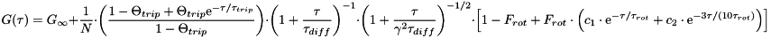
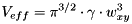
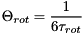
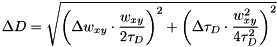
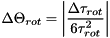
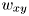
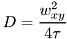
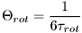

$$qf_commondoc_header.start$$ $$qf_commondoc_header.end$$
This file implement a one-component 3D diffusion model which also includes a rotational
diffusion term and a triplett term. The model may be denoted as:

The parameters are:
 : offset of the correlation function
: offset of the correlation function : overall particle number (including currently dark particles, e.g. in triplet state)
: overall particle number (including currently dark particles, e.g. in triplet state)- Ftrip: fraction of the particles in the triplet state
 : decay time of the triplet state
: decay time of the triplet state : diffusion decay time
: diffusion decay time- Frot: rotating fraction
- τrot: rotation term decay time
- c1, c2: prefactors for flow, see below and reference
 : aspect ratio of the gaussian used to approximate the focus
: aspect ratio of the gaussian used to approximate the focus : lateral half axis of the focus gaussian
: lateral half axis of the focus gaussian : longitudinal half axis of the focus gaussian
: longitudinal half axis of the focus gaussian
This model also calculates the diffusion coefficient, if the width of the laser focus (xy plane) is known, as:
![\[ D=\frac{w_{xy}^2}{4\tau_D} \]](./pic/form_20.png)
where  is the diffusion time. Also the effective focal volume
is the diffusion time. Also the effective focal volume  is calculated:
is calculated:

Given this focal volume, the plugin may also calculate the particle concentration in the sample:
![\[ C=\frac{N}{V_{eff}} \]](./pic/form_15.png)
The rotational diffusion coefficient is defined as

The plugin also calculates some parameter errors:
![\[ \Delta \left(\frac{1}{N}\right)=\left|\frac{\Delta N}{N^2}\right| \]](./pic/form_16.png)


![\[ \Delta V_{eff}=\sqrt{\left(\Delta\gamma\cdot\pi^{3/2}\cdot w_{xy}^3\right)^2+\left(\Delta w_{xy}\cdot 3\pi^{3/2}\cdot \gamma\cdot w_{xy}^2\right)^2} \]](./pic/form_17.png)
![\[ \Delta C=\sqrt{\left(\frac{\Delta N}{\pi^{3/2}\cdot\gamma\cdot w_{xy}^{3}}\right)^2+\left(\Delta\gamma\cdot\frac{N}{\pi^{3/2}\cdot w{xy}^3\cdot\gamma^2}\right)^2+\left(\Delta w_{xy}\cdot\frac{3\cdot N}{\pi^{3/2}\cdot\gamma\cdot w_{xy}^4}\right)^2} \]](./pic/form_18.png)
This model also calculates the diffusion coefficient, if the width  of the laser focus (xy plane) is known, as:

where τ is the diffusion time. In addition it calculates the Frot parameter of the rotational component as it
is defines in the paper [Aragòn and Pecora 1975]:

This paper also contains values for c1 and c2, which are situatioin-dependent:
| excitation light | detection | c1 | c2 |
|---|
| lin. polarized | parallel polarization | 80 | 64/9 |
| lin. polarized | perpendicular polarization | 20/9 | 4 |
| lin. polarized | no polarization | 860/9 | 4 |
| no polarization | parallel polarization | 5/9 | 16/9 |
| no polarization | perpendicular polarization | 215/9 | 1 |
| no polarization | no polarization | 20 | 1 |
parallel and perpendicular polarizationare relative to the symmetry axis of the focal volume
- [Aragòn and Pecora 1975]: S. R. Aragòn, R. Pecora: Fluorescence correlation spectroscopy and Brownian rotational diffusion, Biopolymers, Volume 14, Issue 1, pages 119-137, January 1975, DOI: 10.1002/bip.1975.360140110